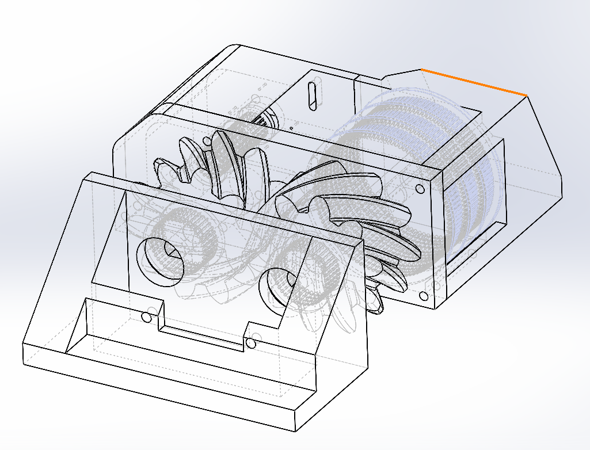
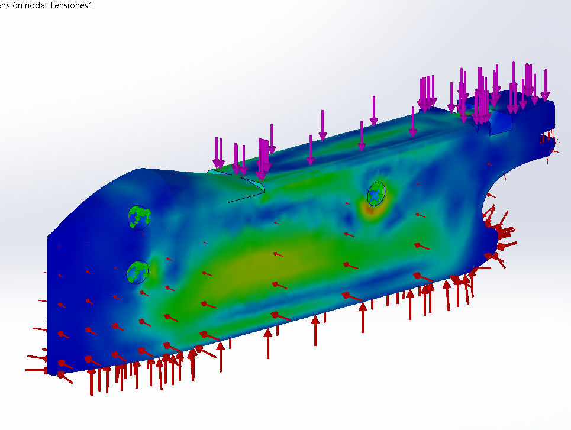

Project L.I.L.Y.
Vehículo Autónomo de SuperficieDiseño e integración de la arquitectura del sistema tipo catamarán para una embarcación autónoma. Modelado estructural para soportar los requerimientos de navegación y alojamiento de los sistemas electrónicos y sensores.
Detalles Técnicos
- Mi Rol: Ingeniero Multidisciplinario (Primavera 2026).
- El Reto: Diseñar la arquitectura eléctrica y estructural de un catamarán autónomo capaz de maniobrar en canales estrechos para la recolección de plagas acuáticas.
- Aportación: Integración de la estructura y manufactura, así como la implementación de sensores y procesamiento a bordo.
- Tecnologías: SolidWorks, Fusion CAM, MATLAB (Simulink), Altium, Python, Edge Impulse, C++

